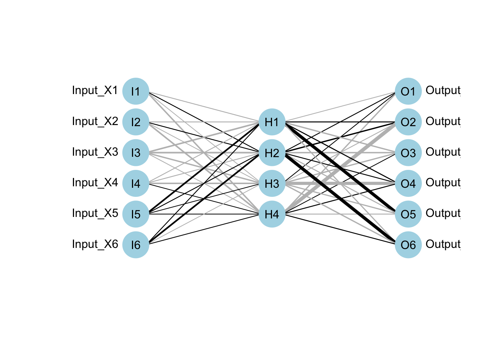
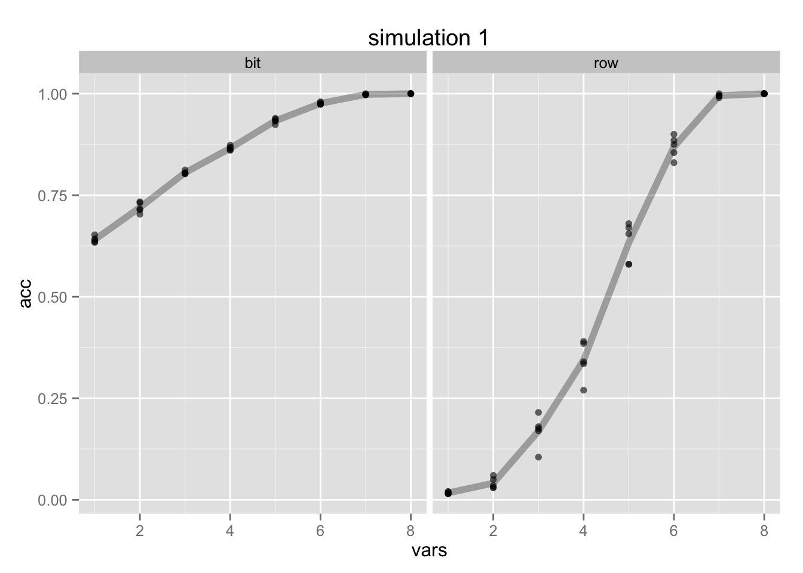
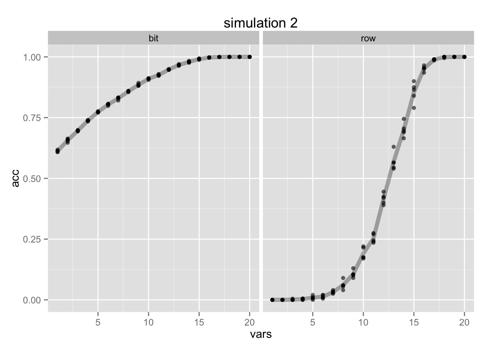
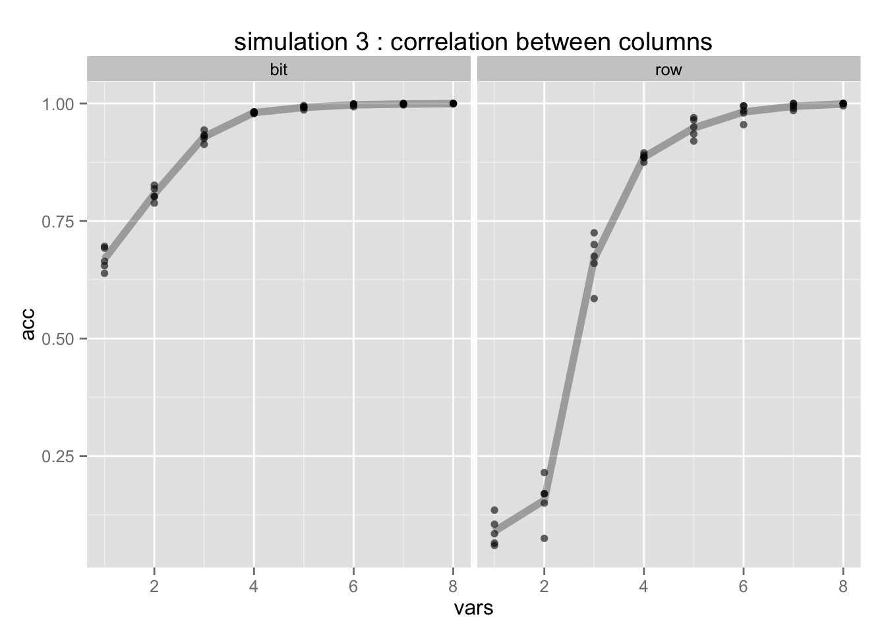
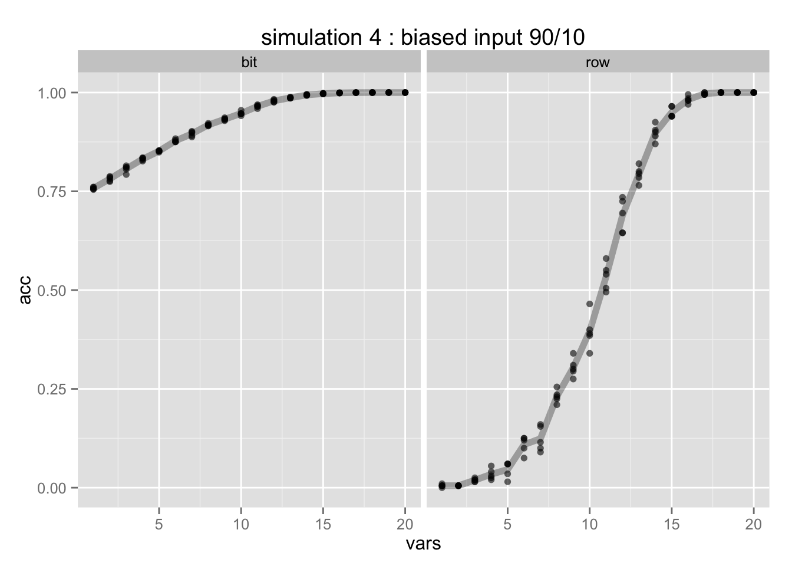

In this document I will show a small experiment that shows how a neural network can be used as a pca-algorithm. It should also help explain how neural networks work and why neural networks can be such a powerful machine learning algorithm.
I will start out by generation random bits as data in a data frame.
set.seed(1)
num.vars = 6
num.obs = 500
df = data.frame(replicate(num.vars,sample(0:1,num.obs,rep=TRUE)))
This bits will then be used as input and output for a neural network. The goal is to see if a neural network can be trained to fit the data back into its original format while only using a limited amount of nodes in the hidden layer. Such a neural network might look like so:

We can check the performace of such a neural network.
bit.acc = sum( round(mod$fitted.values) == df ) / sum( df == df )
row.acc = sum(rowSums(round(mod$fitted.values) == df) == 6)/nrow(df)
In this case we have about 91% of the bits estimated correctly and about 58% of the rows estimated correctly. That means that we are able to maintain almost 60% of the variance in this dataset by only using 4 hidden nodes (out of 6 total data sources). This is interesting because right now we are using a neural network to simulate compression and it gives us an alternative to eigenvalue based principle component analysis.
To further investigate this effect we would need to set up a proper simulation run. Neural network algorithms usually have random initialization values, so I will simulate multiple neural networks per hidden node size. Below I have created the simulation function that I will use throughout the document.
simulation = function(df, num.sims){
results = data.frame(vars = as.numeric(c()), acc = as.numeric(c()), type=as.factor(c()))
num.vars = ncol(df)
for(i in 1:num.vars){
for(j in 1:num.sims){
# cat("hidden nodes :", i ,"sample #", j, "\n")
mod = mlp(df, df, size=c(i))
bit.acc = sum( round(mod$fitted.values) == df ) / sum( df == df )
row.acc = sum(rowSums(round(mod$fitted.values) == df) == num.vars)/nrow(df)
results = rbind(results, data.frame(vars = i, acc = bit.acc, type= "bit"))
results = rbind(results, data.frame(vars = i, acc = row.acc, type= "row"))
}
}
results
}
num.vars = 8
num.obs = 200
df = data.frame(replicate(num.vars,sample(0:1,num.obs,rep=TRUE)))
sims = simulation(df, 5)

We see the effect that we would expect. It is much easier to predict a correct bit, theres about 50% of guessing a bit correctly so it doesn't come off as suprising that the bit performance is always above 50% accuracy. Estimating the entire row prooves to be much more difficult. We need six out of eight nodes to achieve an accuracy above 50%.
We will now simulate a much larger neural network.
num.vars = 20
num.obs = 200
df = data.frame(replicate(num.vars,sample(0:1,num.obs,rep=TRUE)))
sims = simulation(df, 5)

We see a very similar effect but notice we need more than 10 hidden nodes to achieve 50% accuracy.
We will now simulate the data slightly differently. We will cause some correlation between columns and to show that we need less hidden nodes if the data is correlated.
num.vars = 4
num.obs = 200
df = data.frame(replicate(num.vars,sample(0:1,num.obs,rep=TRUE)))
df = cbind(df, sapply(df$X1, function(x) if(runif(1)<0.8) x else sample(0:1)[1]))
df = cbind(df, sapply(df$X2, function(x) if(runif(1)<0.8) x else sample(0:1)[1]))
df = cbind(df, sapply(df$X3, function(x) if(runif(1)<0.8) x else sample(0:1)[1]))
df = cbind(df, sapply(df$X4, function(x) if(runif(1)<0.8) x else sample(0:1)[1]))
sims = simulation(df, 5)

A similar conclusion can be made when it is more likely for a '1' bit to occur than a '0' bit.
num.vars = 20
num.obs = 200
df = data.frame(replicate(num.vars,sample(c(0,1,1,1),num.obs,rep=TRUE)))
sims = simulation(df, 5)

I do somehow feel like only a very niche of humanity cares about this sort of thing. Nonetheless I think I have been able to produce yet another example showing that neural networks are really really cool simply because they you can apply and approach the phenomenon from many different angles.
Feel free to comment/edit. Full Rscript can be found here.